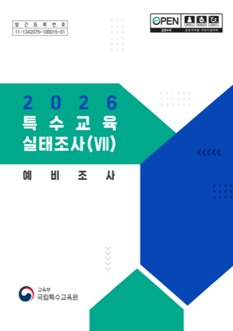
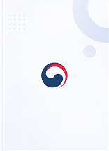
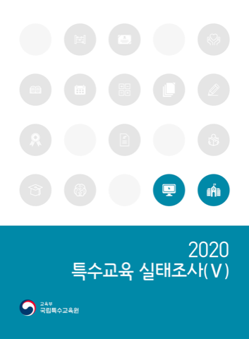
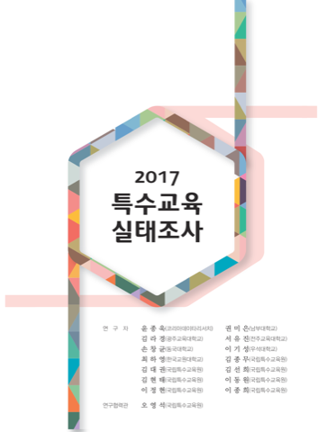
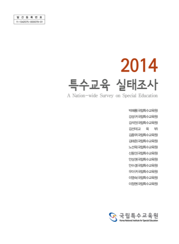
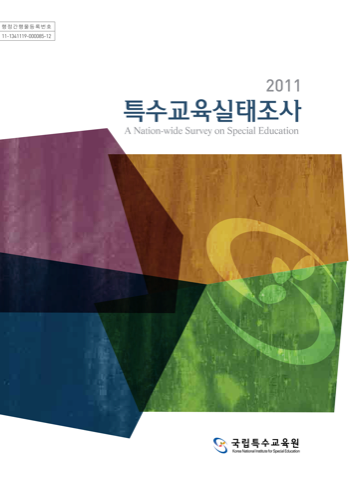
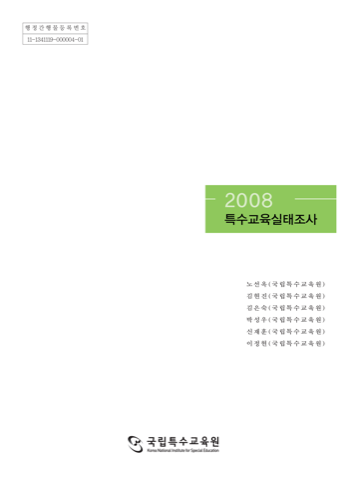

실태조사 자료 목록
총 38개
현재 페이지1 / 전체 페이지24
-

실태조사 보고서2026 특수교육 실태조사 보고서
-

이슈페이퍼2026년 진로 이슈페이퍼 1호
-
 통계자료
통계자료2025 특수교육통계
-
 실태조사 보고서
실태조사 보고서2023년 특수교육 실태조사 보고서
-
정책자료
제6차 특수교육 발전 5개년 계획
-

실태조사 보고서2020년 특수교육 실태조사 보고서
-

실태조사 보고서2017년 특수교육 실태조사 보고서
-

실태조사 보고서2014년 특수교육 실태조사 보고서
-

실태조사 보고서2011년 특수교육 실태조사 보고서
-

실태조사 보고서2008년 특수교육 실태조사 보고서
-
실태조사 보고서
2014년 특수교육 실태조사 보고서
-
실태조사 보고서
2014년 특수교육 실태조사 보고서
종단연구 자료 목록
종단연구 자료 목록 (실태조사 탭과 같은 구조)
특수교육통계 자료 목록
특수교육통계 자료 목록 (실태조사 탭과 같은 구조)